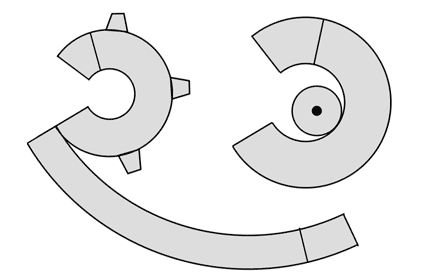

Attaching the housing/shield

Print templates on standard overhead transparency sheet. If your EIB does not use a central optical fiber ferrule, a different placement of the mounting hole might be required.
Glue aluminium foil to the transparency sheet with epoxy for the cone part.
Use plain transparency sheet for the cap part.
Cut out parts using scissors, and glue with epoxy.
Clamp the parts with a hemostat while the epoxy cures.
If there are gaps left in the shield cone, fill them in with a second, thin layer of epoxy.
For cap: attach optical ferrule cap (different depending on EIB type) to cap. This securely holds the cap in place and allows easy removal and re-attachment.
Alternatively, or in addition, use small pieces of adhesive tape to attach the cap to the drive after implant. We are getting the best results with kapton tape. Use new pieces of tape each time and make sure all edges of the tape are fully adhering.
Guide the ground wire through the bottom opening of the protective schield cone and attach cone with epoxy. Make sure there is a strong bridge of epoxy between the side of the drive body and the cone. Use multiple layers of epoxy if needed. Take extra care not to touch and bend electrodes with the protruding end of the ground wire.
Use conductive epoxy to connect the shield wire to the drive shield. Secure with additional layer of regular epoxy.
Apply small amount of mineral or silicone oil to the springs where they meet the screws.
The drive is now ready to implant.